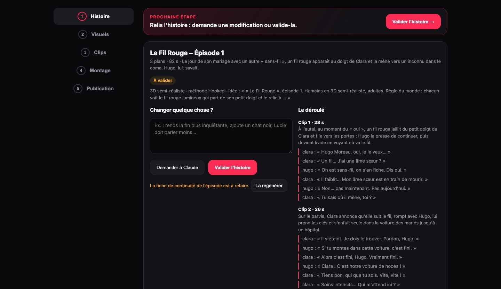

Le studio vidéo des chaînes H-Reboot et Noor
HReboot Studio est une application pour ordinateur qui mène une courte vidéo verticale de la première idée à la publication TikTok : écriture, images, animation, voix, montage, sous-titres, couverture et publication, au même endroit.
Les chaînes
HReboot Studio produit et publie les vidéos des chaînes TikTok tenues par son créateur. Chaque vidéo ne peut partir que vers la chaîne pour laquelle elle a été faite.
H-Reboot
@h.rebootDessins animés originaux, vidéos explicatives et vidéos de données, en français.
Noor (français)
@noor.coran.appRécitations du Coran avec traduction française et versets expliqués en images, pour l'appli Noor.
Noor (anglais)
@noor.quran.inspirRécitations du Coran avec traduction anglaise, pour l'appli Noor.
Cette liste est tenue à jour : une chaîne y est ajoutée avant que le studio n'y publie.
Ce que fait le studio
Quatre ateliers partagent les mêmes étapes de relecture et de publication.
Animation originale
De courtes histoires animées, créées de zéro.
- Histoire et découpage validés par le créateur
- Images et animation produites plan par plan
- Voix, bruitages et musique
- Montage, étalonnage, sous-titres et couverture
Vidéos explicatives et de données
« Tu savais que… », comparatifs et graphiques animés.
- Sujets recherchés et vérifiés sur des sources publiques
- Texte écrit, puis corrigé par le créateur
- Voix off, animation graphique et sous-titres
- Chiffres toujours repris de la source citée
Noor
Les vidéos des chaînes de l'appli de Coran Noor.
- Récitations avec le texte du verset et sa traduction
- Versets expliqués en images
- Paysages calmes sous licence libre
- Ni musique, ni voix IA, ni texte IA pour le Coran
HREBOOT Clips
Des clips verticaux préparés à partir de vidéos longues.
- Transcription et choix des meilleurs passages
- Recadrage vertical et sous-titres incrustés
- Bandeau de titre, couverture et légende proposée
- Les clips tirés de vidéos de tiers ne partent qu'en brouillon
Les étapes
Chaque vidéo passe par les mêmes étapes. Rien n'avance sans la validation du créateur.
Écrire
Le texte ou l'histoire est écrit, puis relu et corrigé par le créateur avant toute production.
Produire
Images, animation, voix et graphiques sont produits, contrôlés et refaits si besoin.
Monter
Son, sous-titres et image de couverture sont assemblés dans la vidéo verticale finale.
Relire
Le créateur regarde la vidéo terminée et modifie la légende et les hashtags.
Publier
Le créateur choisit la visibilité et les interactions, puis publie sur TikTok ou envoie un brouillon.
Suivre
Le studio affiche l'état du traitement par TikTok jusqu'à ce que la vidéo soit en ligne ou dans les brouillons.

Comment HReboot Studio utilise TikTok
Le studio se connecte à TikTok par la connexion officielle (Login Kit) et l'API de publication (Content Posting API), uniquement après l'autorisation du titulaire du compte.
Connexion avec TikTok
Le créateur clique sur « Connecter TikTok » et accepte la demande sur la page de TikTok. Le studio affiche alors le nom et la photo du compte connecté.
Le créateur décide de chaque publication
Avant chaque publication, il choisit qui peut voir la vidéo, si les commentaires, duos et collages sont autorisés, et déclare tout contenu commercial. Rien n'est publié sans cette confirmation.
Publication directe ou brouillon
Les vidéos que le créateur a le droit de publier peuvent être publiées directement. Toute vidéo peut aussi partir en brouillon, à terminer dans l'application TikTok.
Le contenu IA est signalé
Les vidéos réalisées avec des outils d'IA (image, vidéo ou voix) sont signalées comme « contenu généré par IA » à la publication.
Les accès restent sur l'ordinateur
Les jetons d'accès TikTok sont gardés dans le trousseau macOS de l'ordinateur du créateur. Ils ne sont jamais envoyés à un autre serveur.
L'autorisation peut être retirée
Le créateur peut se déconnecter dans le studio, ou retirer l'autorisation dans l'application TikTok : Sécurité → Applications et services.
Questions
Qu'est-ce que HReboot Studio ?
C'est le studio de production et de publication des chaînes TikTok H-Reboot et Noor : une application pour ordinateur utilisée par le créateur de ces chaînes.
Sur quels comptes TikTok publie-t-il ?
Uniquement sur les chaînes listées sur cette page, chacune connectée par son titulaire avec la connexion officielle de TikTok. Une vidéo faite pour une chaîne ne peut pas partir sur une autre.
Publie-t-il sans que le créateur le sache ?
Non. Chaque publication part d'un clic explicite, après relecture de la vidéo, de la légende, de la visibilité et des interactions.
Quelles données lit-il sur TikTok ?
Le profil de base du compte connecté (identifiant, nom affiché, photo) et les options de publication que TikTok lui autorise. Il ne lit aucune donnée de spectateurs. Le détail est dans la politique de confidentialité.
Et les vidéos tirées de contenus de tiers ?
Elles ne sont jamais publiées directement. Elles peuvent seulement partir en brouillon dans l'application TikTok, où le créateur décide de leur suite, sous sa responsabilité et selon les règles de TikTok.
D'où viennent les récitations et les traductions du Coran ?
De récitations et de traductions publiées, mises à disposition par Quran.com. Le texte arabe n'est jamais modifié ni généré, et chaque source est créditée.
Contact
Pour toute question sur HReboot Studio, ses vidéos ou ces pages, envoyez un message sur TikTok à @h.reboot. Les demandes sur les données personnelles passent par le même canal ; voir la politique de confidentialité.